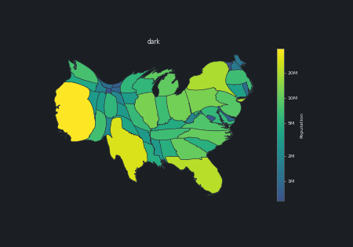
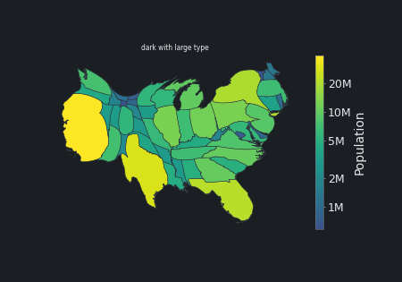
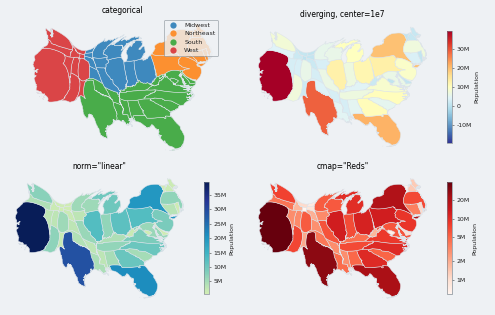
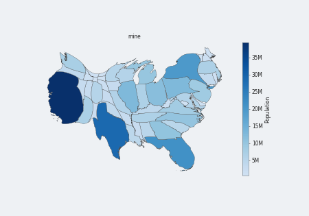

The how-to "Style Plots and Animations" was a Markdown page with code blocks and no output, so it showed no plot and no animation. It is now a notebook that the documentation build executes, with the built-in styles on one cartogram, style_context and set_style, the palettes of the data types, your own and combined styles, and two animations.
The page was written as Markdown, which the build does not execute, so it could not show output; this was not a decision. The other how-tos are notebooks.
The two animations (the morph with the error in the dark style, and morph_timeline with the large type) are shown inline on the built page and are not in this report.
| how-to | docs/how-to/style-plots.ipynb replaces style-plots.md; the navigation and the how-to index point to it |
| text | the prose and the reference lists of the page are kept as text cells (what a style holds, keeping styles between sessions) |
The notebook runs without error (about 10 s); the docs build, which executes it, runs in CI.

The same cartogram in the dark style (the default and classic figures are on the page).

The dark style combined with the large type of a slide.

Categories, a diverging scale around a center, a linear scale and a palette of the call.

A registered style with the Blues palette, a linear scale and thinner edges.